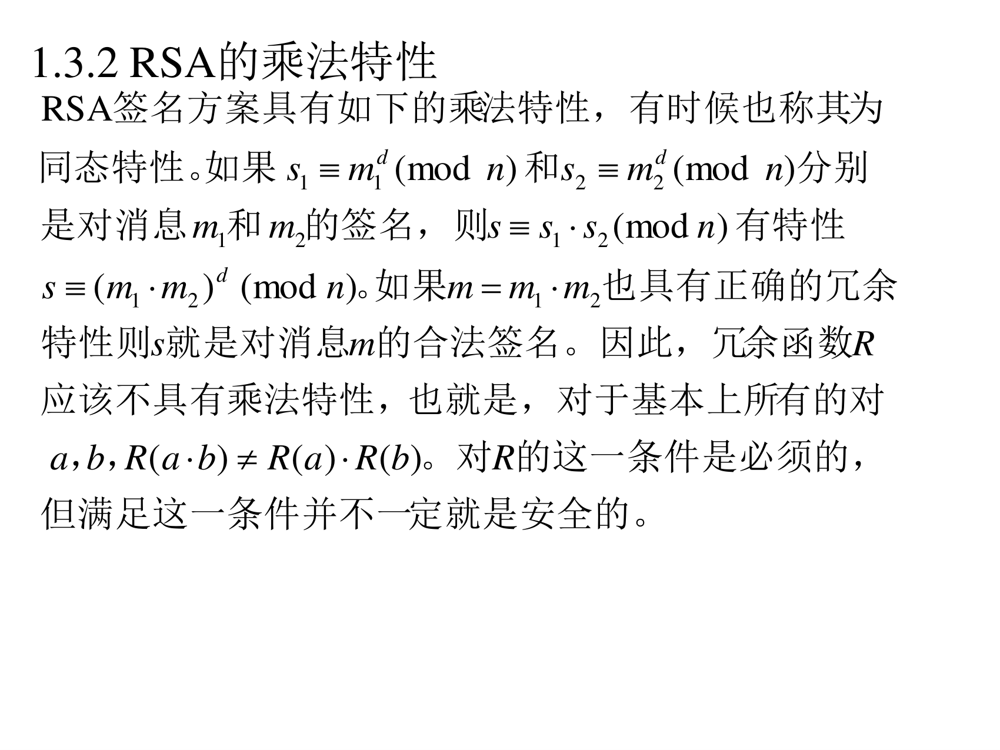
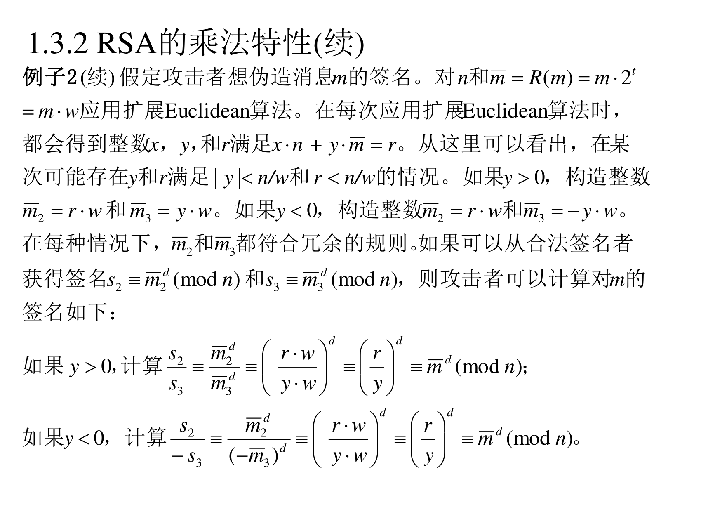

本页目录
7.1.3 RSA 签名的可能攻击
7.1.3.1 整数分解
（PPT 第 10 页）
如果一个攻击者可以分解某个实体 A 的公开模 n n n φ \varphi φ e ⋅ d ≡ 1 ( m o d φ ) e\cdot d\equiv1\pmod\varphi e ⋅ d ≡ 1 ( mod φ ) d d d 这一方法使签名系统完全崩溃。 为了阻止这一攻击，A 必须选择 p p p q q q n n n
翻译成人话 ：RSA 签名的安全性 = RSA 加密的安全性 = 大整数分解的困难性 。分解 n n n p , q p,q p , q φ \varphi φ d d d
7.1.3.2 RSA 的乘法特性（同态性）
（PPT 第 11 页）

RSA 签名方案具有如下的乘法特性 ，有时候也称其为同态特性 。如果 s 1 ≡ m ‾ 1 d ( m o d n ) s_1\equiv\overline{m}_1^{d}\pmod n s 1 ≡ m 1 d ( mod n ) s 2 ≡ m ‾ 2 d ( m o d n ) s_2\equiv\overline{m}_2^{d}\pmod n s 2 ≡ m 2 d ( mod n ) m 1 m_1 m 1 m 2 m_2 m 2 s ≡ s 1 ⋅ s 2 ( m o d n ) s\equiv s_1\cdot s_2\pmod n s ≡ s 1 ⋅ s 2 ( mod n )
s ≡ ( m ‾ 1 m ‾ 2 ) d ( m o d n ) s\equiv(\overline{m}_1\overline{m}_2)^{d}\pmod n s ≡ ( m 1 m 2 ) d ( mod n ) m ‾ 1 m ‾ 2 = m ‾ \overline{m}_1\overline{m}_2=\overline{m} m 1 m 2 = m s s s m m m 冗余函数 R R R ，也就是，对于基本上所有的对 a , b a,b a , b R ( a ⋅ b ) ≠ R ( a ) ⋅ R ( b ) R(a\cdot b)\ne R(a)\cdot R(b) R ( a ⋅ b ) = R ( a ) ⋅ R ( b ) R R R
翻译成人话 ：RSA 的指数运算有"分配律"的味道：
s 1 ⋅ s 2 = m ‾ 1 d ⋅ m ‾ 2 d = ( m ‾ 1 m ‾ 2 ) d s_1\cdot s_2=\overline{m}_1^{d}\cdot\overline{m}_2^{d}=(\overline{m}_1\overline{m}_2)^{d} s 1 ⋅ s 2 = m 1 d ⋅ m 2 d = ( m 1 m 2 ) d 所以两个签名的乘积 = 两个消息乘积的签名 。这是一个天然的"伪造工厂"：攻击者不用私钥就能"拼"出新签名。防御办法就是让 R R R 破坏这种乘法结构 （比如加上随机填充、定长格式等）。
例子 2：一个具体的伪造攻击 （PPT 第 12–13 页）
例子 2 ：令 n n n d d d k = ⌈ lg n ⌉ k=\lceil\lg n\rceil k = ⌈ lg n ⌉ n n n t t t 2 t < k / 2 2^{t}<k/2 2 t < k /2 w = 2 t w=2^{t} w = 2 t m m m [ 1 , n 2 − t ] [1,n2^{-t}] [ 1 , n 2 − t ] R ( m ) = m ⋅ 2 t R(m)=m\cdot2^{t} R ( m ) = m ⋅ 2 t R ( m ) R(m) R ( m ) t t t n n n R R R

例子 2（续） 假定攻击者想伪造消息 m m m n n n m ‾ = R ( m ) = m ⋅ 2 t = m ⋅ w \overline{m}=R(m)=m\cdot2^{t}=m\cdot w m = R ( m ) = m ⋅ 2 t = m ⋅ w x , y x,y x , y r r r x ⋅ n + y ⋅ m ‾ = r x\cdot n+y\cdot\overline{m}=r x ⋅ n + y ⋅ m = r y y y r r r ∣ y ∣ < n / w |y|<n/w ∣ y ∣ < n / w r < n / w r<n/w r < n / w y > 0 y>0 y > 0 m ‾ 2 = r ⋅ w \overline{m}_2=r\cdot w m 2 = r ⋅ w m ‾ 3 = y ⋅ w \overline{m}_3=y\cdot w m 3 = y ⋅ w y < 0 y<0 y < 0 m ‾ 2 = r ⋅ w \overline{m}_2=r\cdot w m 2 = r ⋅ w m ‾ 3 = − y ⋅ w \overline{m}_3=-y\cdot w m 3 = − y ⋅ w m ‾ 2 \overline{m}_2 m 2 m ‾ 3 \overline{m}_3 m 3 s 2 ≡ m ‾ 2 d ( m o d n ) s_2\equiv\overline{m}_2^{d}\pmod n s 2 ≡ m 2 d ( mod n ) s 3 ≡ m ‾ 3 d ( m o d n ) s_3\equiv\overline{m}_3^{d}\pmod n s 3 ≡ m 3 d ( mod n ) m m m y > 0 y>0 y > 0 s 2 s 3 ≡ m ‾ 2 d m ‾ 3 d ≡ ( r ⋅ w y ⋅ w ) d ≡ ( r y ) d ≡ m ‾ d ( m o d n ) \dfrac{s_2}{s_3}\equiv\dfrac{\overline{m}_2^{d}}{\overline{m}_3^{d}}\equiv\left(\dfrac{r\cdot w}{y\cdot w}\right)^{d}\equiv\left(\dfrac{r}{y}\right)^{d}\equiv\overline{m}^{d}\pmod n s 3 s 2 ≡ m 3 d m 2 d ≡ ( y ⋅ w r ⋅ w ) d ≡ ( y r ) d ≡ m d ( mod n ) y < 0 y<0 y < 0 s 2 − s 3 ≡ m ‾ 2 d ( − m ‾ 3 ) d ≡ ( r ⋅ w y ⋅ w ) d ≡ ( r y ) d ≡ m ‾ d ( m o d n ) \dfrac{s_2}{-s_3}\equiv\dfrac{\overline{m}_2^{d}}{(-\overline{m}_3)^{d}}\equiv\left(\dfrac{r\cdot w}{y\cdot w}\right)^{d}\equiv\left(\dfrac{r}{y}\right)^{d}\equiv\overline{m}^{d}\pmod n − s 3 s 2 ≡ ( − m 3 ) d m 2 d ≡ ( y ⋅ w r ⋅ w ) d ≡ ( y r ) d ≡ m d ( mod n )
翻译成人话 （这个攻击的构造很妙，慢慢跟着走）：
攻击目标 ：拿到 m m m m m m 手中的工具 ：扩展 Euclidean 算法能在 n n n m ‾ = m w \overline{m}=mw m = m w x n + y m ‾ = r xn+y\overline{m}=r x n + y m = r r r r 关键一跳 ：因为 x n + y m ‾ = r xn+y\overline{m}=r x n + y m = r n n n y m ‾ ≡ r y\overline{m}\equiv r y m ≡ r r y ≡ m ‾ ( m o d n ) \dfrac{r}{y}\equiv\overline{m}\pmod n y r ≡ m ( mod n ) 攻击者不需要私钥，就已经把目标 m ‾ \overline{m} m r y \dfrac{r}{y} y r 借刀杀人 ：让签名者对 m ‾ 2 = r w \overline{m}_2=rw m 2 = r w m ‾ 3 = y w \overline{m}_3=yw m 3 = y w s 2 , s 3 s_2,s_3 s 2 , s 3 合体 ：s 2 s 3 ≡ ( r y ) d ≡ m ‾ d = s \dfrac{s_2}{s_3}\equiv\left(\dfrac{r}{y}\right)^{d}\equiv\overline{m}^{d}=s s 3 s 2 ≡ ( y r ) d ≡ m d = s 目标签名到手 。（除以 s 3 s_3 s 3
结论 ：R ( m ) = m 2 t R(m)=m2^{t} R ( m ) = m 2 t 天生带乘法结构 ，是危险的。这就是为什么现代 RSA 签名必须用 PSS 之类的随机化填充（7.1.5 节）。